2026
Our paper Fictional vs. Factual Robot Tutor Dialogue Can Shape Child Social-Emotional Learning, led by Ph.D. student Lauren Wright and conducted in collaboration with Kiljoong Kim of Chapin Hall, received the Best Paper Award for User Studies at HRI 2026. This exciting work explores how the style of a robot tutor's dialogue — fictional versus factual — can shape children's social-emotional learning outcomes. The work has been featured in UChicago News, UChicago CS News, and Forbes. Congratulations to Lauren and all the authors!

Our lab traveled to Edinburgh, Scotland for the ACM/IEEE International Conference on Human-Robot Interaction (HRI 2026), where we presented three papers showcasing our recent research on human-robot interaction:
- Fictional vs. Factual Robot Tutor Dialogue Can Shape Child Social-Emotional Learning by Lauren L. Wright, Kaitlyn Li, Hewitt Watkins, Kiljoong Kim, and Sarah Sebo. This work was awarded the Best Paper Award for User Studies!
- Can You Help Me? The Influence of Robot Requests for Help on Child-Robot Connection by Teresa Flanagan, Justin Chenjia Zhang, Lin Bian, and Sarah Sebo
- Customizing Robot Personality: How Personality Control and Form Factor Shape Perceptions of a Robot as a Social Agent by Alex Wuqi Zhang, Aaron Huang, Allison J. Li, and Sarah Sebo

Our lab has published the Reduced-Length Connection-Coordination Rapport (CCR) Scale (Ting-Han Lin, G. Chen, Bilge Mutlu, J. Gregory Trafton, and Sarah Sebo) in ACM Transactions on Human-Robot Interaction. This new 8-item scale is a shortened and validated version of our full-length 18-item CCR Scale, designed to save time and reduce participant survey fatigue. Researchers interested in measuring human-robot rapport in their studies can learn more about both the full-length and reduced-length CCR scales on our CCR Scale resource page.
2025
Our group has three papers accepted to the ACM/IEEE International Conference on Human Robot Interaction (HRI 2026) on the topics of children helping robots, fictional vs. factual robot tutors, and customizing robot personality. We will present our work at the conference in Edinburgh, Scotland March 16-19, 2026.
The work of our lab has recently been featured on UChicago's Inside the Lab series! Check out the video and the corresponding news article to learn more about our lab's mission and research areas, as well as some of the exciting projects we are working on.
Work in our lab led by Ph.D. student Timmy Lin explores the influence of a robot's positive or negative feedback on the interpersonal connections between people in shared decision-making tasks and is now published in Computers in Human Behavior. Check out the paper here!.
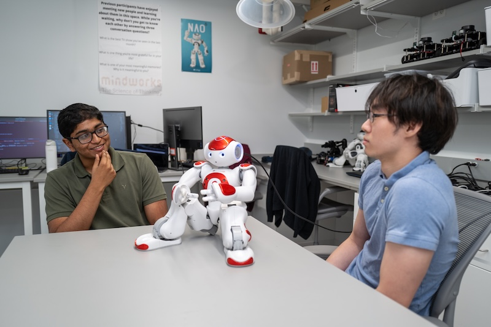
A new paper published in our lab led by Ph.D. Lauren Wright demonstrates that children experience less anxiety when reading aloud to a robot as opposed to a human adult. This work highlights a unique advantage that robots can have in educational settings, creating safe spaces for children to make mistakes while learning without fearing judgment. This work is featured in UChicago News and UChicago CS News.
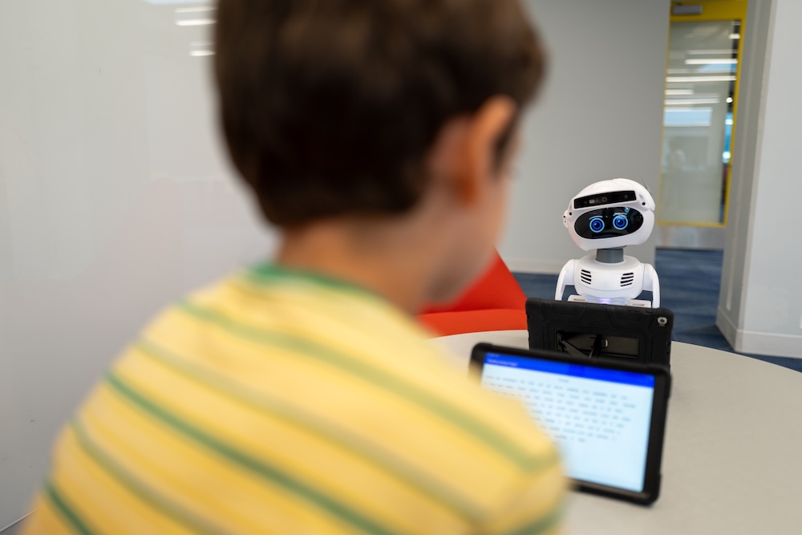
Lauren recently presented her work exploring how people respond to a robot's instructions that may undermine another robot, specifically in the context of ingroup and outgroup dynamics, at the 2025 RO-MAN Conference. Read more about this exciting work soon, once the conference proceedings are published!
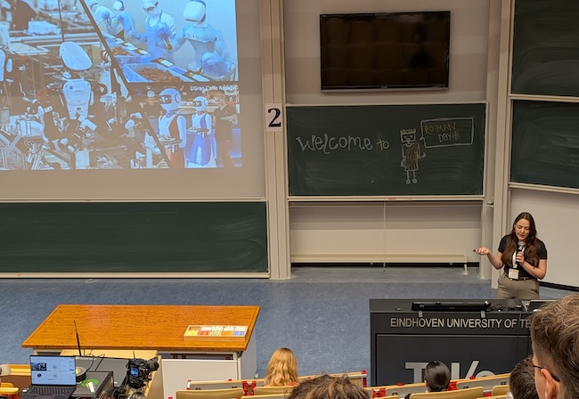
NPR published a piece Neurotic robots can be more relatable than extroverted bots, study finds discussing the findings of our recent HRI 2025 paper exploring robot personality traits and the particular potential of neurotic personality traits for robots. You can read the full paper here (authors: Alex Wuqi Zhang, Clark Kovacs, Liberto de Pablo, Justin Zhang, Maggie Bai, Sooyeon Jeong, Sarah Sebo).
Our work investigating user how users perceive robots as social agents when they have the ability to control and customize their behavior was featured in UChicago CS News — here's a link to the article. This work was published at HRI 2025 and received a best paper honorable mention award. You can read the full paper here (authors: Alex Wuqi Zhang, Rafael Queiroz, and Sarah Sebo).
We hosted a visit from Jodi Forlizzi, Herbert A. Simon Professor in Computer Science and the Human-Computer Interaction Institute at Carnegie Mellon University. Jodi's visit included a talk on "The Role of Design in Purposeful and Pragmatic AI" as well as discussions with our lab members about our ongoing projects. We are grateful for her time and insights!
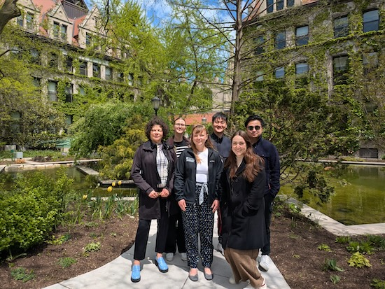
UChicago's HRI lab participated in the Museum of Science and Industry's annual Robot Block Party this past weekend, where we were able to showcase our robots and talk about human-robot interaction research with the Chicago community. It was fantastic to participate in such a fantastic event with other amazing roboticists in the Chicago area! During the event, our lab members and robots were also featured on local Chicago TV station Fox 32.
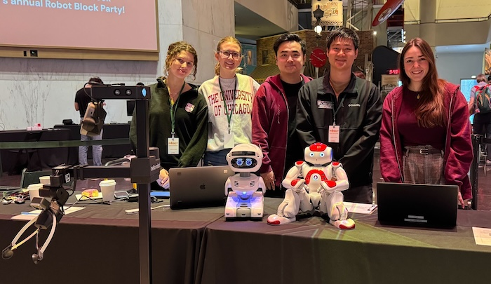
Our paper Balancing User Control and Perceived Robot Social Agency through the Design of End-User Robot Programming Interfaces (authors: Alex Wuqi Zhang, Rafael Queiroz, and Sarah Sebo) to be presented at HRI 2025 by Alex Wuqi Zhang has been nominated for best paper!
Our group has four papers accepted to the ACM/IEEE International Conference on Human Robot Interaction (HRI 2025) and we will present our work on March 6th (the final day of the conference):
- Balancing User Control and Perceived Robot Social Agency through the Design of End-User Robot Programming Interfaces by Alex Wuqi Zhang, Rafael Queiroz, and Sarah Sebo
- Connection-Coordination Rapport (CCR) Scale: A Dual-Factor Scale to Measure Human-Robot Rapport by Ting-Han Lin, Hannah Dinner, Tsz Long Leung, Bilge Mutlu, J. Gregory Trafton, and Sarah Sebo
- Enabling End Users to Program Robots Using Reinforcement Learning by Tewodros W. Ayalew*, Jennifer Wang*, Michael L. Littman, Blase Ur, and Sarah Sebo
- Exploring Robot Personality Traits and Their Influence on User Affect and Experience by Alex Wuqi Zhang, Clark Kovacs, Liberto de Pablo, Justin Zhang, Maggie Bai, Sooyeon Jeong, and Sarah Sebo
2024
Sarah received the NSF CAREER award to fund work focused on developing social skills for robots to interact and collaborate with groups of people! You can read more about this exciting award and project in this UChicago CS Department news article.
UChicago's HRI lab participated in the Museum of Science and Industry's annual Robot Block Party this past weekend, where we were able to showcase our robots and talk about human-robot interaction research with the Chicago community. It was fantastic to participate in such a fantastic event with other amazing roboticists in the Chicago area! During the event, our lab members and robots were also featured on local Chicago TV stations NBC Chicago and WGN News.
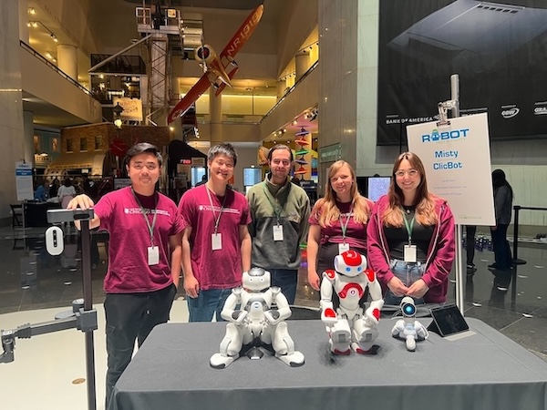
HRI lab meetings will be held during the 2024 Spring quarter on Tuesdays from 3:30pm - 4:30pm in JCL 354 starting Tuesday, March 19. If you're a current UChicago student and interested in learning more about our research and/or how to get involved with our research, please feel free to join our weekly lab meetings. Feel free to email sarahsebo@uchicago.edu if you have any questions.
Our paper A Taxonomy of Robot Autonomy for Human-Robot Interaction (authors: Stephanie Kim, Jacy Reese Anthis, and Sarah Sebo) presented at HRI 2024 by Stephanie Kim was given an honorable mention for best paper!
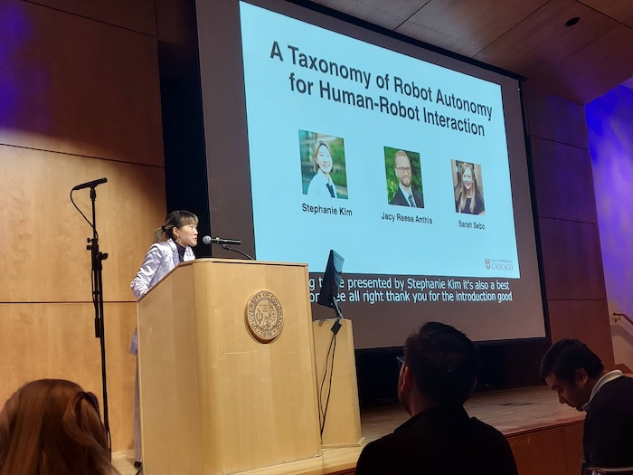
Stephanie Kim, Spenger Ng, Jacy Anthis, and Sarah Sebo attended the ACM/IEEE International Conference on Human Robot Interaction (HRI 2024) in Boulder Colorado. Stephanie and Spencer both presented their papers:
- A Taxonomy of Robot Autonomy for Human-Robot Interaction by Stephanie Kim, Jacy Reese Anthis, and Sarah Sebo
- Role-Playing with Robot Characters: Increasing User Engagement through Narrative and Gameplay Agency by Spencer Ng, Ting-Han Lin, You Li, and Sarah Sebo
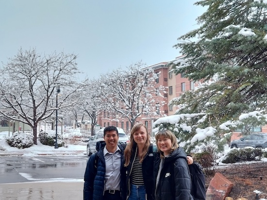
PI Sarah Sebo is a joint author of the paper RoSI A Model for Predicting Robot Social Influence that was just accepted for publication at THRI. This paper proposes a new conceptual model that predicts the level of social influence a robot has in a human-robot interaction based on two factors: violation of expectation and a person's social belonging with the robot. To learn more, please read the paper:
- RoSI A Model for Predicting Robot Social Influence by Hadas Erel*, Marynel Vázquez*, Sarah Sebo*, Nicole Salomons*, Sarah Gillet*, and Brian Scassellati* (* equal contribution)
PI Sarah Sebo is a member of a collaborative team that has just published a paper in the THRI journal defining the sub-field of HRI called Interaction-Shaping Robotics (ISR). ISR investigates robots that influence the behaviors and attitudes exchanged between two (or more) other agents. To learn more, please read the paper:
- Interaction-Shaping Robotics: Robots that Influence Interactions between Other Agents by Sarah Gillet, Marynel Vázquez, Sean Andrist, Iolanda Leite, and Sarah Sebo
HRI lab meetings will be held during the 2024 Winter quarter on Mondays from 3:30pm - 4:30pm in JCL 346 starting Monday, January 8. If you're a current UChicago student and interested in learning more about our research and/or how to get involved with our research, please feel free to join our weekly lab meetings. Feel free to email sarahsebo@uchicago.edu if you have any questions.
2023
Our group has two papers accepted to the ACM/IEEE International Conference on Human Robot Interaction (HRI 2024):
- A Taxonomy of Robot Autonomy for Human-Robot Interaction by Stephanie Kim, Jacy Reese Anthis, and Sarah Sebo
- Role-Playing with Robot Characters: Increasing User Engagement through Narrative and Gameplay Agency by Spencer Ng, Ting-Han Lin, You Li, and Sarah Sebo
The University of Chicago Magazine published an article about the summer high school robotics course taught by members of our lab, including PI Sarah Sebo and PhD student Ting-Han Lin. The article highlights the importance of introducing high school students to robotics and programming, as well as the unique opportunities that this course provides for students to learn about human-robot interaction research. Read the full article here!
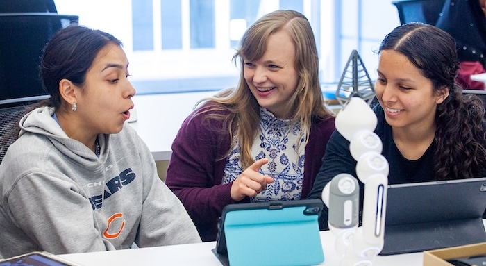
The Human-Robot Interaction (HRI) labs at the University of Chicago (UChicago), the University of Wisconsin-Madison (UW Madison), and the University of Illinois at Urbana-Champaign (UIUC) gathered to discuss future collaborations.
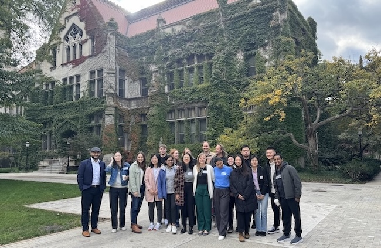
Our group had a paper accepted to CHI 2023 Conference on Human Factors in Computing Systems (CHI '23): Ice-Breaking Technology: Robots and Computers Can Foster Meaningful Connections between Strangers through In-Person Conversations by Alex Wuqi Zhang, Ting-Han Lin, Xuan Zhao, Sarah Sebo
Our lab demoed some current research projects at Chicago's Museum of Science and Industry for their Robot Block Party event. It was incredibly fun to share our work and robots with so many interested children, adults, and robo-enthusiasts!
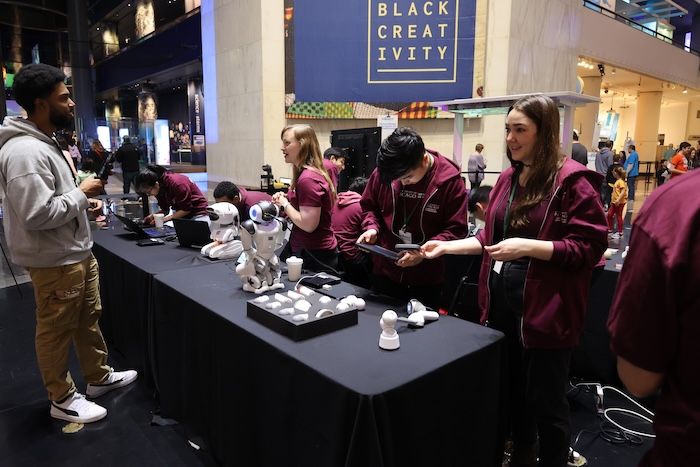
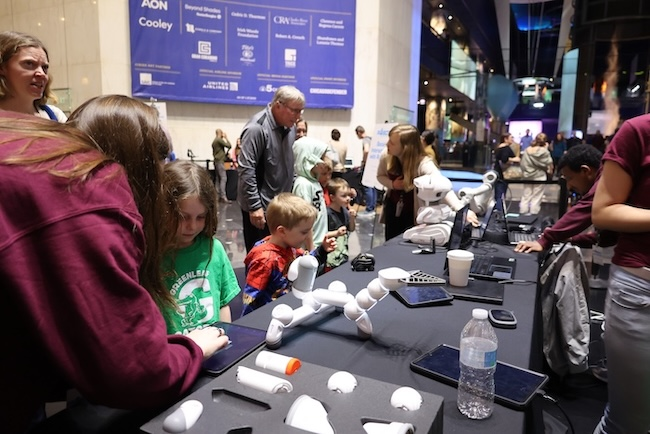
A first-of-its-kind study looked at the effectiveness of using technological facilitators to "break the ice" between strangers and increase overall well-being.
HRI lab meetings will be held during the 2023 Spring quarter on Mondays from 11:30am - 12:30pm in JCL 346 starting Monday, March 27. If you're a current UChicago student and interested in learning more about our research and/or how to get involved with our research, please feel free to join our weekly lab meetings. Feel free to email sarahsebo@uchicago.edu if you have any questions.
Sarah presented the lab's work at Northwestern University. Read more about the talk and the lab's research in this article from The Daily Northwestern, a snippet of which is included here: Imagine a world where humans empathize with robots. Well, according to recent research at the University of Chicago, they already do. About 40 students gathered in classroom B211 in the Technological Institute Friday afternoon to hear about University of Chicago computer science Prof. Sarah Sebo's research as director of the Human-Robot Interaction Lab.
HRI lab meetings will be held during the 2023 Winter quarter on Wednesdays from 3:00pm - 4:00pm in JCL 346 starting Wednesday, Jan 11. If you're a current UChicago student and interested in learning more about our research and/or how to get involved with our research, please feel free to join our weekly lab meetings. Feel free to email sarahsebo@uchicago.edu if you have any questions.
2022
HRI lab meetings will be held during the 2022 Fall quarter on Wednesdays from 12:30pm - 1:30pm in JCL 354 starting Wednesday, September 28. If you're a current UChicago student and interested in learning more about our research and/or how to get involved with our research, please feel free to join our weekly lab meetings. Feel free to email sarahsebo@uchicago.edu if you have any questions.
This fall, we are welcoming two new PhD students to the lab: Lauren Wright and Tewodros Ayalew. Welcome Lauren and Tewodros!
Our group is presenting 3 papers at the IEEE International Conference on Robot & Human Interactive Communication (RO-MAN 2022):
- Physical Touch from a Robot Caregiver: Examining Factors that Shape Patient Experience by Alex Mazursky, Madeleine DeVoe, and Sarah Sebo
- Benefits of an Interactive Robot Character in Immersive Puzzle Games by Ting-Han Lin*, Spencer Ng*, and Sarah Sebo (*equal contribution)
- Parental Responses to Aggressive Child Behavior towards Robots, Smart Speakers, and Tablets by Keziah Naggita, Elsa Athiley, Beza Desta, and Sarah Sebo
Lauren, Spencer, and Timmy are attending RO-MAN in Naples, Italy this week to present their work!
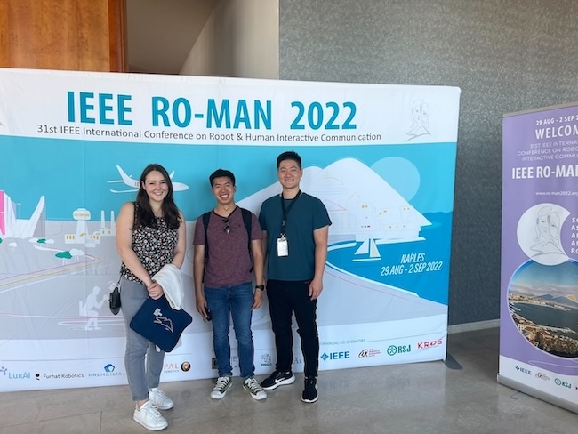
Our group had 3 papers accepted to the IEEE International Conference on Robot & Human Interactive Communication (RO-MAN 2022):
- Physical Touch from a Robot Caregiver: Examining Factors that Shape Patient Experience by Alex Mazursky, Madeleine DeVoe, and Sarah Sebo
- Benefits of an Interactive Robot Character in Immersive Puzzle Games by Ting-Han Lin*, Spencer Ng*, and Sarah Sebo (*equal contribution)
- Parental Responses to Aggressive Child Behavior towards Robots, Smart Speakers, and Tablets by Keziah Naggita, Elsa Athiley, Beza Desta, and Sarah Sebo
Our lab demoed some current research projects at Chicago's Museum of Science and Industry for their Robot Block Party event. It was incredibly fun to share our work and robots with so many interested children, adults, and robo-enthusiasts!
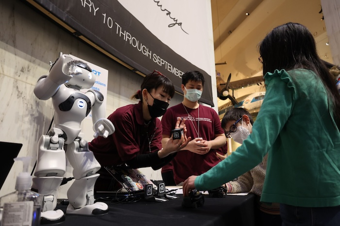
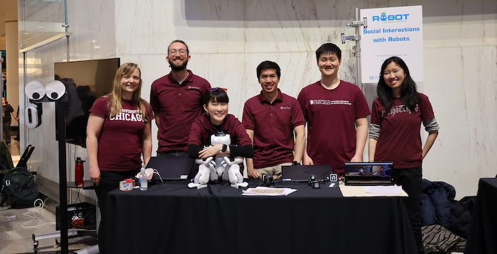
HRI lab meetings will be held during the 2022 Spring quarter on Mondays from 3:00pm - 4:00pm CST in JCL 354 starting Monday, April 4. If you're a current UChicago student and interested in learning more about our research and/or how to get involved with our research, please feel free to join our weekly lab meetings. Feel free to email sarahsebo@uchicago.edu if you have any questions.
Some of the HRI Lab members visited Chicago's Green River while in downtown Chicago. The city dyes the Chicago river green each year for St. Patrick's day.
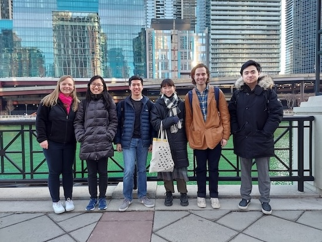
We had our first in-person lab demo session for the admitted CS PhD students visit day!
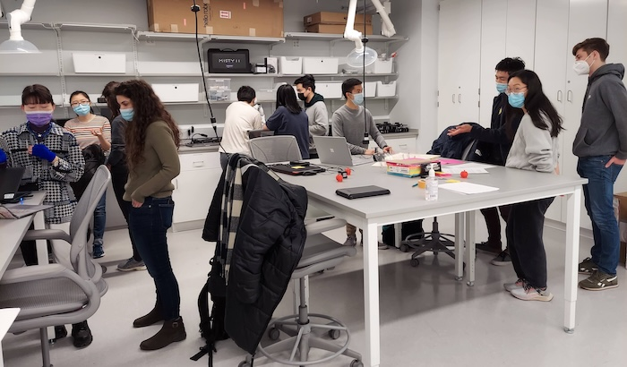
Sarah delivered her baby in December of 2021 and is on parental leave during the Winter quarter of 2022.
2021
We brainstormed activities that might increase an interpersonal bond between a human and a robot during our weekly lab meeting.
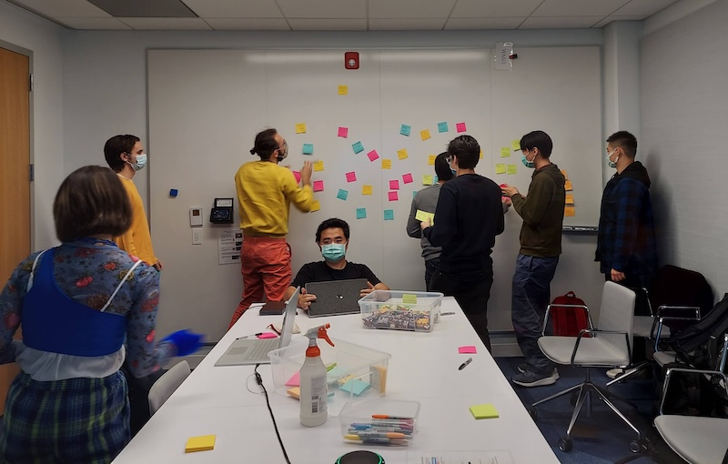
HRI lab meetings will be held during the 2021 Fall quarter on Mondays from 4:00pm - 5:00pm CST in JCL 354 starting Monday, October 4. If you're a current UChicago student and interested in learning more about our research and/or how to get involved with our research, please feel free to join our weekly lab meetings. Feel free to email sarahsebo@uchicago.edu if you have any questions.
For UChicago students interested in learning more about human-robot interaction research, in the fall quarter of 2021 PI Sarah Sebo is teaching CMSC 33281 Topics in Human-Robot Interaction. This course gives students a broad overview of current cutting-edge research in HRI and also provides students with the opportunity of conducting their very own HRI research project.
This summer, 4 undergraduate UChicago students conducted summer internships in the HRI lab working on a variety of interesting projects - we had a great time!
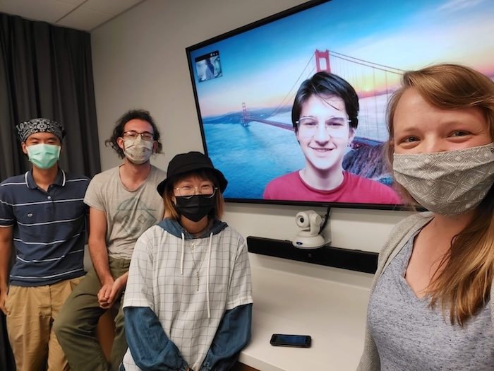
For UChicago students interested in learning more about robotics, in the spring quarter of 2021 PI Sarah Sebo is teaching CMSC 20600 Introduction to Robotics . This course is a hands-on and project based course designed to give students familiarity programming physical robots and real-world environments. Check out the course website for more details.
We, the HRI lab at UChicago, had our first lab meeting! Lab meetings will occur every week from 3:00pm - 4:00pm on Thursdays. If you're a current UChicago student and interested in learning more about our research and/or how to get involved with our research, please feel free to join our weekly lab meetings (email sarahsebo@uchicago.edu for the Zoom link).
For UChicago students interested in learning more about robotics, in the winter quarter of 2021 PI Sarah Sebo is teaching CMSC 20600 Introduction to Robotics . This course is a hands-on and project based course designed to give students familiarity programming physical robots and real-world environments. Check out the course website for more details.
2020
PI Sarah Sebo's work The Influence of Robot Verbal Support on Human Team Members: Encouraging Outgroup Contributions and Suppressing Ingroup Supportive Behavior has been published in Frontiers in Psychology: Performance Science in their special issue Teamwork in Human-Machine Teaming.
PI Sarah Sebo presented her work Robots in Groups and Teams: A Literature Review at the virtual CSCW 2020 conference.